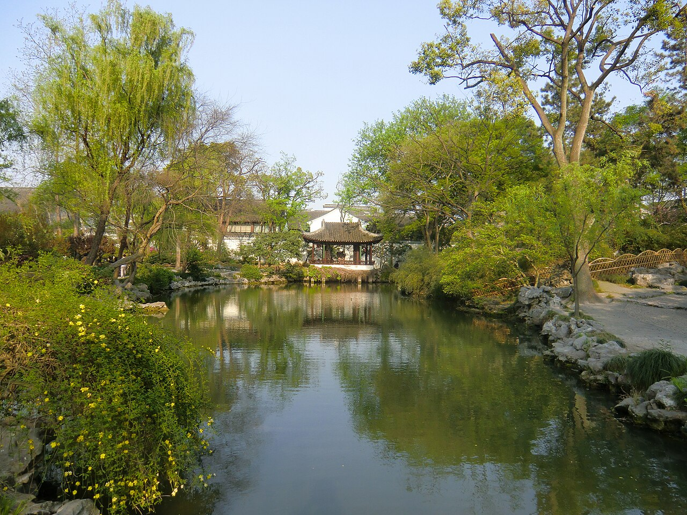

南京
第1天 / 抵达与秦淮
老门东慢行，傍晚去夫子庙秦淮河一带。
第2天 / 山林或文物
钟山或南京博物院，按兴趣与预约择一。

在一座园里，
看见山水。
从秦淮灯影，到湖上亭桥，再走进一座园林。每天选一个重点，留出看风景与吃早餐的时间。
老门东慢行，傍晚去夫子庙秦淮河一带。
钟山或南京博物院，按兴趣与预约择一。
上午预留交通时间，安顿后沿湖看亭桥。
早茶后按预约参观运博，傍晚漫步东关街。
预留交通余量，抵达后在河街小巷散步。
拙政园或苏博本馆择一，再按班次返程。
建议住宿 南京2晚 / 扬州2晚 / 苏州1晚
自主策划建议，非官方线路或在售套餐；日程按预约与体力调整。